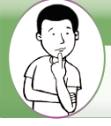
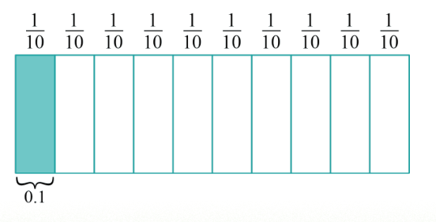

Chapter Eight
Decimals
Introduction
In this chapter, you will learn how to convert fractions into decimals, add and subtract decimals. The competencies developed will enable you to apply the concept of decimals in metric measurements, constructions, exchange of money, sports, medicine, health and fitness and many other real-life applications.

An illustration of a pupil thinking, with one hand resting under the chin.Think
Life without application of decimal numbers
Concept of decimals
Decimals are numbers that consist of a whole number and a fractional part separated by a dot called decimal point. Decimals are system of counting that originates from the base-ten system. Study the following diagram that explain the concept of decimals.

The diagram shows a rectangular bar divided into ten equal vertical parts. Each part is labelled one over ten. The first part on the left is shaded. A bracket below the shaded part labels it zero point one. This shows that one over ten is equal to zero point one.